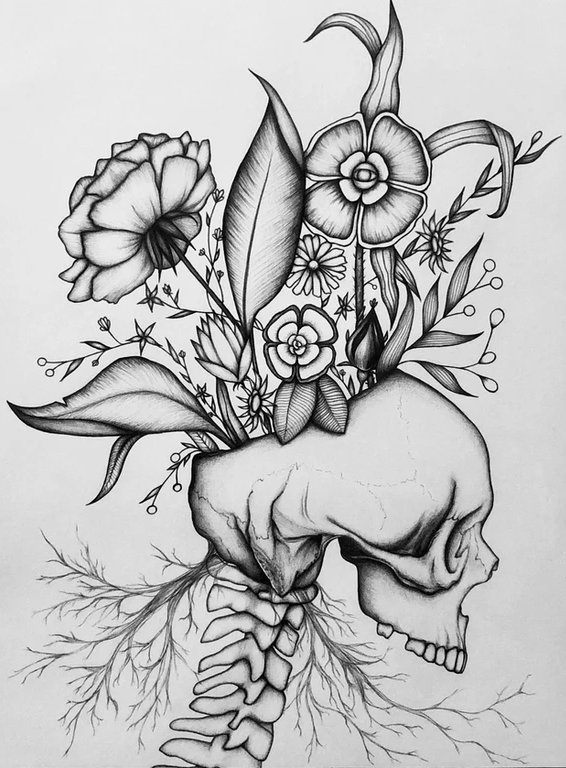

<div class="home-intro">

<!-- CSS Code -->
<style type="text/css" scoped>
img.GeneratedImage {
width:550px;height:700px;margin:10px;border-width:6px;border-color:#000000;border-style:solid;
}
</style>

<!-- HTML Code -->
<a href="https://leighmillera.wixsite.com/mysite/current-work?pgid=juy7g6jl-0fa06952-8c4a-4db6-8a5f-5067b2e42819" target="_self"></a>

	<div class="jumbo">{{site.heading}} </div>
    <div class="home-sub-text"> <h3>
        I'm using Jekyll Garden. This is a markdown friendly theme that lets you publish your Obsidian vault (or a subset of it) as a Jekyll static website. 
        Check out the <a href="{{'/notes' | relative_url}}"> demo </a>, <a href="{{'/post/features' | relative_url}}"> features </a> and <a href="{{'/post/how-to' | relative_url}}"> how to</a>.
        </h3> 
</div> </div>

